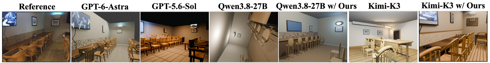
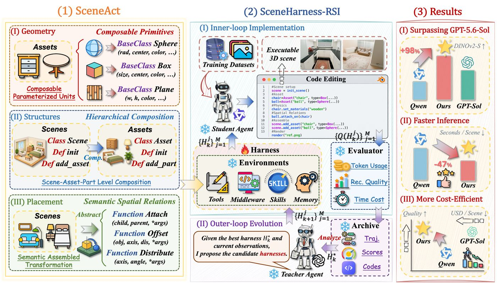
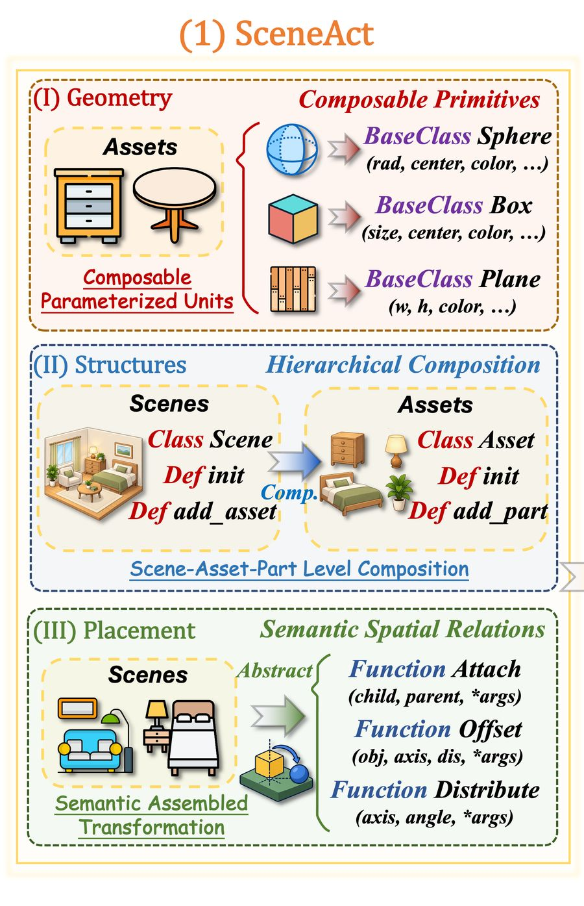
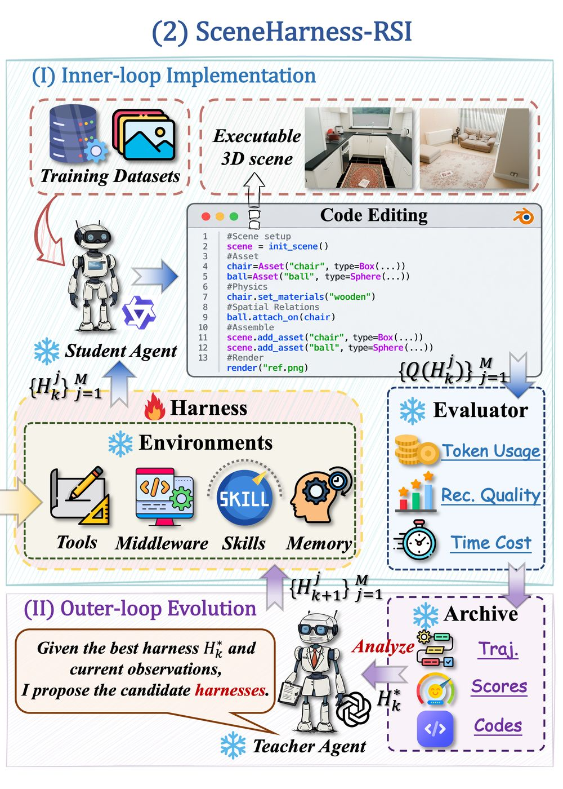
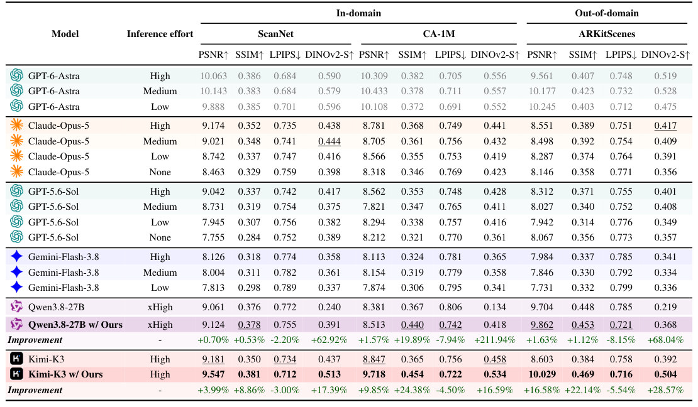
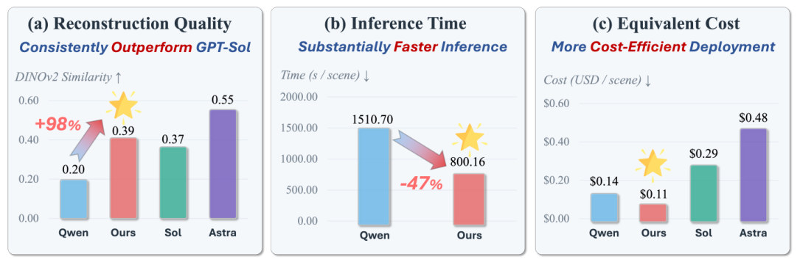
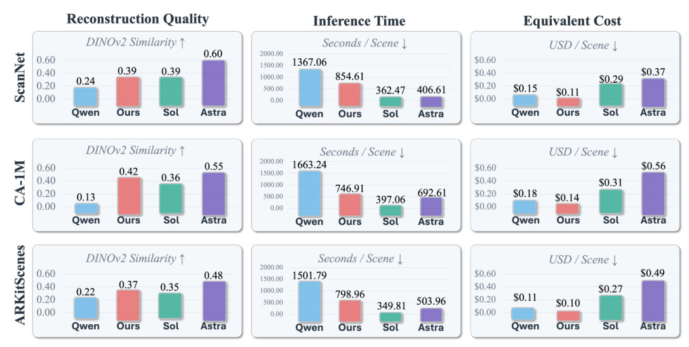
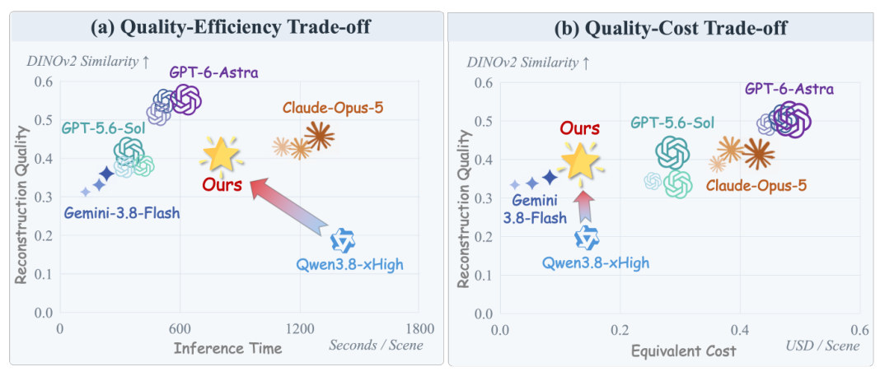
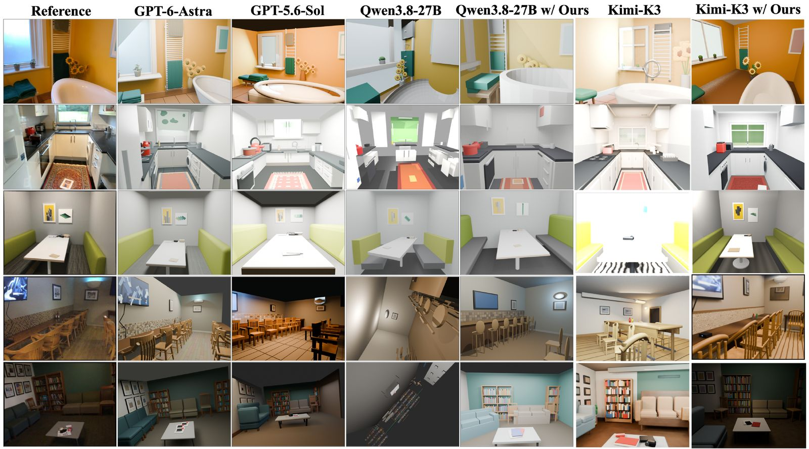
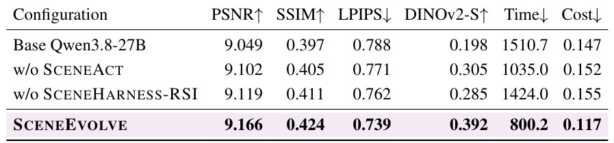

Agent-centric-real-to-sim · 归档于 2026-11-16
SceneEvolve
Learning to Code the World: Harness Evolution for Compositional 3D Reconstruction
归档到 Agent-centric real-to-sim：agent 把一张真实室内照片写成可编辑、按物体组合的 Blender 场景程序，靠演化 harness 而不是训练模型；只做到几何和外观，不进物理仿真器（演化 harness 这一半也和 LLM-Harness 相关）。
TL;DR
- Problem
- 一张室内照片 → 可编辑、按物体组合的 3D 场景代码。前沿模型写得好但贵；27B 开源小模型连相机视角都摆不对。
- Idea
- 不动模型参数：SceneAct 把几何变成"选原语 + 说空间关系"；SceneHarness-RSI 让 GPT-6-Astra 当 teacher，在 100 个 dev 场景上把 harness 改 30 轮，只留严格更高分的版本，测试时冻结、不再要 teacher。
- Result
- Qwen3.8-27B 的 DINOv2-S 0.198 → 0.392，时间 −47.0%（都是对 base）；对 GPT-5.6-Sol none：平均 SSIM +32.3%、成本 −59.8%，但时间多 116.4%；同一 harness 给 Kimi-K3，三个数据集四项指标全涨。
Problem
小模型摆不对相机和布局，大模型摆得对但贵
Running example · 后面每个 stage 都跟着它走
酒吧（Fig. 6 第 4 行）：一张 RGB 照片 左墙电视 · 瓷砖腰线 · 靠墙长吧台 · 一排木椅，没有真值相机和深度 → 想要：一段可执行的 Blender Python 场景程序，从模型自己估的相机渲染出来和照片一致，之后还能按物体、按部件改。

怎么读这张图
- Reference：输入照片。
- GPT-6-Astra：吧台边一排座位，最像照片；论文把它当参照模型（Table 1 灰色行）。
- GPT-5.6-Sol：把桌椅摆成横贯房间的好几排（§4.3）。
- Qwen3.8-27B：相机严重歪斜，场景认不出来（§4.3 "severe viewpoint distortions"）。
- Qwen3.8-27B w/ Ours：靠墙一条长吧台 + 一排重复的高凳（§4.3）。
- Kimi-K3 → Kimi-K3 w/ Ours：同一个 harness 换给另一个模型，见 Stage 5。
flowchart LR IN["酒吧照片
Fig. 6 第 4 行"]:::example --> A1["GPT-6-Astra
一次调用写 Blender"] A1 --> AX["座位摆对了，但贵
$0.48 / 场景"]:::gap IN --> B1["GPT-5.6-Sol none
一次调用写 Blender"] B1 --> BX["桌椅摆成好几排
DINOv2-S 0.37"]:::gap IN --> C1["Qwen3.8-27B xhigh
同一个最小 harness"] C1 --> CX["相机严重歪斜
0.20 · 1510.70 s"]:::gap
数字是三个测试集的平均（Fig. 3；Sol、Astra 在图注里标为 none 档），论文没报酒吧这一个场景的分数。三条线的"坏在哪"来自 §4.3 对 Fig. 6 的描述；Astra 的问题是成本，出自 §1 的动机。三者用的都是 §D.1 的最小 harness：一次调用，直接写原生 Blender Python。
根本问题：小模型的视觉-空间推理弱，最小 harness 又要它一次写出全部底层坐标；想要质量只能换贵模型。 这篇的切入点：坐标推理交给固定接口 SceneAct（选原语 + 说关系），"怎么一步步做"交给一个由 teacher 在 dev 集上演化、测试时冻结的 harness。
Related work
| 相关工作 | 解决什么 | 怎么解决 | 和本文的区别 |
|---|---|---|---|
| 同一问题 · 别的解法 | |||
| 前沿模型直接写场景代码 GPT-6-Astra、GPT-5.6-Sol、Claude-Opus-5、Gemini-Flash-3.8（本文 baseline） | 单图 → Blender 场景程序 | 最小 harness，一次 API 调用（§D.1） | 质量全靠模型参数，好的贵 → 本文用 27B 小模型，靠演化 harness 补 |
| 渲染-修改循环的代码 agent SceneCraft、BlenderAlchemy、Yin et al. 2026（inverse graphics）、SceneCode、Code-as-Room；本文所在的一族 | 把场景、图形写成可执行程序 | 渲染反馈 + 可复用库，每个场景反复迭代 | harness 由人写死 → 本文让 teacher 在 dev 集上自动改 harness，测试时固定 |
| 多阶段组合式重建 REST3D、Gen3DSR、RoboSnap、SimRecon、Lucida | 单图或多视角 → 可编辑物体 + 布局 | 场景解析 → 物体生成 → 空间优化，分段串起来 | 中间每段都要精心设计 → 本文只有一份程序：原语 + 部件层级 + 关系 |
| 学习式 3D 生成 LRM、InstantMesh、MIDI、SceneGen | 从单图恢复物体或多物体几何 | 训练好的重建或生成模型直接出几何和布局 | 物体几何、场景布局靠训练出的模型给 → 本文不训练，在一段程序里同时搭物体、摆场景 |
| 相似做法 · 别的问题 | |||
| 自改进 agent / harness 优化 Meta-Harness、Self-Harness、STOP、GEPA、TextGrad、Reflexion | 不改权重，让 agent 变强 | 按执行结果改 prompt、memory 或 agent 源码 | 评测在分类、数学、终端编码等任务上 → 本文搬到 3D 重建：分数来自渲染图对照片 |
来源：论文 §1、§2 Related Work、§B.1；未另行检索。RoboSnap 在 library 里有页面，论文只在 §2 引用它，没有比数字。
Level 1 · Big picture
模型、接口、后端全冻结，只演化 harness：teacher 离线改，小模型测试时独自用

图里的符号
| 符号 | 白话 | 在例子里 |
|---|---|---|
| k | 演化进行到第几轮 | 1 到 30（K = 30） |
| Hkj | 第 k 轮的第 j 个候选 harness | 每轮 2 个（M = 2） |
| Hk* | 到第 k 轮为止保留下来的最好 harness | 第 30 轮后冻结，拿去重建酒吧 |
| Q(Hkj) | 候选在 dev 集上的平均质量分，0 到 1，越高越好 | 论文没报具体值 |
怎么读这张图
- (1) SceneAct · (I) Geometry "Composable Primitives"：BaseClass Sphere / Box / Plane，各带参数（rad、size、w/h、center、color…）。酒吧的台面就是一个薄 Box。
- (II) Structures "Hierarchical Composition"：Class Scene（add_asset）→ Class Asset（add_part），即 Scene-Asset-Part 三层。吧台、凳子各是一个 Asset。
- (III) Placement "Semantic Spatial Relations"：Function Attach / Offset / Distribute，用关系代替坐标。一排凳子 = 沿吧台 Distribute。
- (2) (I) Inner-loop：Training Datasets → 冻结的 Student Agent（Qwen 标志）写 Code Editing 里那样的程序 → Executable 3D scene → Evaluator 记 Token Usage、Rec. Quality、Time Cost，回传分数 {Q(Hkj)}。
- 中间的 Harness 框（火焰）：唯一被改的东西，里面是 Tools、Middleware、Skills、Memory 四类；候选 {Hkj} 从这里交给 student。
- (II) Outer-loop Evolution：Archive（Traj.、Scores、Codes）→ Analyze → 冻结的 Teacher Agent（OpenAI 标志 = GPT-6-Astra）拿着最好的 Hk* 说 "I propose the candidate harnesses" → 下一轮 {Hk+1j}。
- (3) Results：DINOv2-S 比 base +98%、高过 GPT-Sol；时间 −47%；质量-成本图上 Ours 在左上。
- 两处别读过头：Evaluator 画了 token 和时间，但保留规则只看质量分 Q（Eq. 4）；代码框里的 "#Physics" 只有
set_materials("wooden")，是外观，不是物理。
flowchart TD D["离线 · dev 集
ScanNet 50 + CA-1M 50"] --> T["Teacher 改 harness
GPT-6-Astra · 30 轮"] T --> H["冻结的 harness
H30"]:::win I["Input
酒吧照片 1 张"]:::example --> M["Student + harness
Qwen3.8-27B xhigh"] H --> M M --> O["Output
Blender 程序 + 渲染"]
边界：输入一张图，输出代码；Blender 只负责执行程序和渲染，没有物理仿真器，也没有质量、摩擦、碰撞参数。
Level 2 · Stages
5 个 stage：固定接口 → 内外两层演化循环 → 部署 → 迁移
flowchart TD S1["1 · SceneAct
吧台 = Asset + Part"] --> S2["2 · Inner loop
student 跑 100 个场景"] S2 -->|"Q(H) + 轨迹"| S3["3 · Outer loop
teacher 提 2 个改法"] S3 -->|"候选 harness"| S2 S3 -->|"30 轮后冻结"| S4["4 · 部署
酒吧：计划→代码→检查"] S4 --> S5["5 · 迁移
Kimi-K3 直接用"] click S1 href "#stage-1" click S2 href "#stage-2" click S3 href "#stage-3" click S4 href "#stage-4" click S5 href "#stage-5"
点击 stage 展开 Level 3 细节。"什么冻结、什么演化"贯穿 stage 2–5，见 stage-all。
Level 3 · Details
每个 stage 的细节
Stage 1 SceneAct：从意图到动作的固定接口 场景意图 → 确定性的 Blender 操作（整个演化中不变）
- Why：小模型直接写网格顶点和坐标容易错；VLM 判断 under、attached to、facing 这类关系，比算精确的 3D 平移旋转可靠（§3.2）。
- 原语（Eq. 1）：每个原语 = 原语库里的一类 + 几何参数 + 外观参数；所有原语共用平移、旋转、缩放接口。学生只答两件事：哪个原语最能解释这块可见部件，参数是多少。
- 层级：Scene（
scene.add_asset）→ Asset（asset.add_part）→ Part（1 个或多个原语）。Scene 增删、变换、复制整个 Asset；Asset 管自己的部件，改一处只动一处。 - 关系：每个元素暴露 center、extent、support、anchor、boundary 这些有语义的几何特征，配
align(...)、distribute(...)等算子；解释器按当前几何、参考系、extent、anchor 确定性地算出变换，编辑后自动重算。
Eq. 1 的符号
| 符号 | 白话 | 在例子里（示意） |
|---|---|---|
| ρi = (κi, gi, ai) | 程序里的第 i 个原语实例 | 吧台台面 |
| κi，G | 它属于预定义原语库 G 里的哪一类 | 薄 Box（§3.2 原例：台面用 thin Box） |
| gi | 几何参数 | 尺寸、中心位置 |
| ai | 外观参数 | 颜色 |

论文写的接口 vs 代码仓库里实际的 API
| 层 | 论文（§3.2、Fig. 2） | 仓库（harnesses/baseline/system.txt） |
|---|---|---|
| 原语 | Box、Cylinder、Curve（正文）；Sphere、Box、Plane（Fig. 2） | box、ball、rod、fillet_box、sweep_tube；fuse / subtract 布尔组合；move / turn / resize |
| 层级 | scene.add_asset、asset.add_part | Scene / Asset / Part；include、remove、clone、replicate |
| 关系 | align、distribute（正文）；Attach、Offset、Distribute（Fig. 2） | landmark、snap、abut、center_on、offset_at、repeat_line、pile、lattice、orbit；scene.bind + settle 存成持久约束 |
| 落地 | 解释器确定性求解，编辑后重算 | realize(scene) 生成 Blender 几何；set_view 设相机；area_emitter 设灯 |
名字不一样，三层结构一样。仓库的 align、distribute、add_asset 都不存在；看代码以仓库为准。
flowchart TD SC["Scene
bar"] --> A1["Asset · 吧台
Part：台面、柜体"] SC --> A2["Asset · 凳子 ×N
Part：座面、腿"] A1 --> P1["原语
台面 = 薄 Box"] A2 --> R["关系
沿吧台 distribute"] P1 --> X["解释器
算出坐标"] R --> X X --> B["Blender 操作
网格、材质"]
Running example 在这一步（示意，论文没给这个场景的程序）
Scene「bar」里放 Asset「吧台」（台面是薄 Box）和 Asset「凳子」（座面 + 腿）；凳子沿吧台 distribute 成一排，腿接在座面下，坐标都由解释器按吧台的 extent 和 anchor 算出。吧台改长，凳子跟着重排（§3.2 "re-evaluated after edits"）。
Stage 2 Inner loop：冻结的 student 在 dev 集上跑候选 harness 候选 harness + 100 个 dev 场景 → 程序、渲染、执行轨迹 + 平均分 Q(H)
- Why：要公平比较两个 harness，得用同一个冻结模型、同样的预算和打分，在同一批场景上跑（§3.3）。
- dev 集：ScanNet 50 + CA-1M 50 = 100 个场景，两个数据集等权；同一物理场景的所有视角只进一个 split（§4.1）。ARKitScenes 一张都不用。
- student：Qwen3.8-27B xhigh，参数冻结；每个候选用相同的解码配置、rollout 预算、渲染设置和打分协议（§3.3）。
- 产出：每个场景一段 Blender 程序、一张渲染图、一份执行轨迹；按 Eq. 2 算分。
- 起点 H0（§D.1）：只有一段 system prompt 和一段 user prompt；没有 MCP 工具、skills、agent 循环、memory；模型收到一张图，返回一整段可执行的 Blender Python。
Eq. 2：dev 集质量分
Q(H) = 1/(3N) · Σi [ S + (1 − L) + (1 + D)/2 ]：每张 dev 图算三项、各在 0 到 1，取平均，再对 N 张图平均；越高越好，只用来比较和挑选候选。
| 符号 | 白话 | 在例子里 |
|---|---|---|
| N | dev 图片数 | 100 |
| Ii，Îi(H) | 第 i 张 dev 照片，和 student 用 harness H 重建后渲染出的图 | 酒吧不在里面：演化只看 dev 场景 |
| S | SSIM，结构相似度，截到 [0, 1] | 论文没报单个场景的值 |
| L | LPIPS，感知距离（越小越好），截到 [0, 1]，所以用 1 − L | |
| D | DINOv2 特征余弦相似度，截到 [−1, 1]，所以用 (1 + D)/2 |
§D.1 起点 harness 的原文 prompt（展开）
| Prompt | 原文 |
|---|---|
| System | You are an expert in reconstructing indoor scenes from reference images using Blender Python. Return only complete, executable Python code, with no explanations or Markdown. Accurately recreate the scene using actual 3D geometry, materials, lighting, and a camera. Do not use the input image as a background or substitute for 3D modeling. Explicitly set the active scene camera. Handle scene modeling and configuration only. Do not save files or render the scene, as these operations will be handled by a separate local script. |
| User | Reconstruct the indoor scene from the input image using Blender 3D modeling. Preserve the original spatial layout, architectural structures, furniture, objects, proportions, positions, orientations, and occlusion relationships. Strictly match the original camera viewpoint, perspective, composition, and framing. Retain the original materials, colors, and textures. Do not redesign the scene or invent off-frame content. The input image is <image>. |
这也是所有 baseline 模型用的 harness（§D.1）。最终 harness 的 prompt 原文论文没给。
flowchart TD H["候选 harness
Hkj"] --> ST["Student（冻结）
Qwen3.8-27B xhigh"] DV["dev 集
100 个场景"] --> ST ST --> OUT["每个场景
程序 + 渲染 + 轨迹"] OUT --> Q["Q(H)
SSIM、LPIPS、DINOv2"]
Running example 在这一步
酒吧这类测试场景在演化中不出现；student 一遍遍重建的是 100 个 dev 场景。起点"SceneAct + 初始 harness"在测试集上平均 DINOv2-S 0.285、1424.0 s / 场景（Table 2 的 w/o SceneHarness-RSI 行）。
Stage 3 Outer loop：teacher 读档案、提候选，严格更高才保留 当前 harness + archive → 每轮 2 个候选 → 保留更好的（共 30 轮）
- Why：harness 是离散的代码和文本，没有梯度；用一个更强的模型读失败案例来提改法（§3.3）。
- 第 k 轮：维护保留的 Hk 和档案 Ak（评过的所有 harness、dev 分数、执行轨迹）。
- 提案（Eq. 3）：teacher = GPT-6-Astra medium，从历史里找反复出现的重建失败和执行失败，提出 M = 2 个修改。改法举例：更好的诊断、工具处理方式、调用 SceneAct 算子的可复用例程；算子语义和 student 参数不动。
- 评估：两个候选都由同一个冻结 student 在 dev 集上跑（Stage 2）。
- 保留（Eq. 4）：本轮最高分的候选，只有严格高于当前记录分才替换；否则保留旧的。
- 档案：所有候选（包括输掉的）都进 archive，后面的提案能参考成功和失败两方面。
- 结束：K = 30 轮后返回 H30。记录分单调不降，但论文明说：不保证期望性能或新场景单调变好（§3.3）。
Eq. 3、Eq. 4 的符号
| 符号 | 白话 | 在例子里 |
|---|---|---|
| Ak | 档案：评过的所有 harness、分数、轨迹 | Fig. 2 的 Traj. / Scores / Codes |
| Pφ( · | Hk, Ak) | teacher 看着当前 harness 和档案写出新 harness；φ 是 teacher 的参数（冻结） | GPT-6-Astra medium |
| H*k+1 | 这一轮得分最高的候选 | 2 选 1 |
| K | 总轮数 | 30 |

- 上半 (I) Inner-loop：Training Datasets 喂给冻结的 Student Agent；它写的程序生成 Executable 3D scene；Evaluator 给出 {Q(Hkj)}。
- 火焰 Harness 框：Tools、Middleware、Skills、Memory，就是 §3.3 说的搜索空间。
- 下半 (II) Outer-loop：Archive 的 Traj.、Scores、Codes 被 Teacher Agent "Analyze"，连同最好的 Hk* 一起，产出下一轮 {Hk+1j}。
flowchart TD AR["Archive Ak
代码 + 分数 + 轨迹"] --> TE["Teacher
GPT-6-Astra medium"] TE --> C1["候选 1"] TE --> C2["候选 2"] C1 --> EV["Student 评 dev 集
同预算、同解码"] C2 --> EV EV --> KEEP["严格更高才替换
Eq. 4"]:::win EV -->|"全部存档"| AR KEEP -->|"下一轮，共 30 轮"| TE
Running example 在这一步
base 在酒吧和 lounge 上的相机扭曲（§4.3）正是 teacher 要从 archive 里找的那类反复失败；最终 harness 在 Plan 阶段显式估相机视角、在 Inspect 阶段检查 camera framing（§D.2）。论文没给演化轨迹，不知道是第几轮、哪次修改加上的。效果：起点测试集 DINOv2-S 0.285、1424.0 s，30 轮后 0.392、800.2 s（Table 2）。
Stage 4 部署：演化后的 harness 独自重建新场景 一张新照片 + 冻结的 H30 → Blender 场景程序 + 渲染（没有 teacher）
- Why：演化的目标是一个可复用的重建流程；测试时不搜索、不更新参数，也没有 teacher（§1、§4.1）。
- Plan：识别可见的建筑结构、家具、物体实例；估几何、比例、外观、相机视角和关键空间关系（相对位置、遮挡）→ 层级场景计划（Asset → Part，属性、空间配置、物体间关系）→ 序列化成结构化 JSON，作为写代码的中间表示。只按可见证据，遮挡和不确定区域保守处理。
- Code：coding agent 用 SceneAct 把计划翻成 Blender Python：原语表局部几何，asset–part 层级表物体结构，空间算子表对齐、分布、支撑、附着；鼓励组合式构建、复用一致的参考系，显式设置相机、材质、颜色、灯光。
- Inspect & render feedback：先执行，查语法错误、运行时失败和其他执行问题；能跑就从目标相机渲染，对照参考照片和场景计划检查：
- VLM 看整体构图、相机取景、物体外观、材质、颜色、光照、遮挡；
- 空间检查看尺寸、相对位置、对齐、支撑、附着、意外穿插；
- 生成针对具体物体、部件或属性的修复指令，只改相关那段代码，不整段重写；再执行、再渲染，循环。
- 论文没给：最终 harness 的完整 prompt 和代码、循环几轮和停止条件、做检查的是哪个 VLM、空间检查怎么实现。
flowchart TD IMG["新照片
酒吧"]:::example --> PL["Plan
场景计划 JSON"] PL --> CO["Code
SceneAct 程序"] CO --> EX["Execute
查语法、运行错误"] EX -->|"出错"| CO EX --> RE["Render
目标相机视角"] RE --> IN["Inspect
VLM + 空间检查"] IN -->|"定向修复"| CO IN --> OUT["Output
吧台 + 一排高凳"]:::win
Running example 在这一步
酒吧照片 → 计划里列出墙、吧台、凳子、电视和相机（示意）→ SceneAct 程序 → 渲染、检查、修 → 输出：靠墙一条长吧台 + 一排重复的高凳（§4.3）。同一张照片，base 给出的是严重扭曲的视角（Fig. 6）。
Stage 5 迁移：同一个 harness 直接给 Kimi-K3 在 Qwen3.8-27B 上演化的 H30 → Kimi-K3 high（不搜索、不微调、不手调）
- Why：检验 harness 学到的是通用的重建流程，而不是只对 Qwen 有效的技巧（§4.2.1）。
- How：Kimi-K3（open-weight 多模态模型）high 档；和不带这个 harness 的 Kimi-K3 比，同 effort、同协议、同执行预算；SceneAct 和执行后端不变（§A.2）。
- 结果：三个数据集四项指标全部提升，和 GPT-6-Astra "competitive"，见 E3；时间和成本论文没报告。
flowchart LR H30["同一个 harness
在 Qwen 上演化"] --> K["Kimi-K3 high
不再搜索"] K --> R["酒吧
木凳对齐吧台"]:::win
Running example 在这一步
Problem 里 Fig. 6 酒吧行的最后两列：Kimi-K3 单独跑，桌子摆在屋子中间、画面偏亮（Fig. 6）；带上这个 harness，木凳对齐吧台（§4.3）。
贯穿 什么冻结、什么演化（stage 2–5） 论文的规定 + 代码仓库里看得到、论文没写的细节
| 内容 | 出处 | |
|---|---|---|
| 演化 | harness = 可调用的工具接口、middleware、可复用 skills、memory；改法如更好的诊断、工具处理方式、调用 SceneAct 算子的例程 | §3.3 |
| 冻结 | student 参数、SceneAct 动作语义、Blender 执行后端；teacher 也冻结 | 摘要、§3.3 |
| 评估时固定 | 解码配置、rollout 预算、渲染设置、打分协议 | §3.3 |
| 测试时 | 选中的 harness 和推理配置冻结；teacher 不参与重建 | §4.1、§A.2 |
代码仓库里看得到、论文没写的（SceneEvolve_Code）
- teacher 是个 Codex CLI agent：
codex exec，workspace-write 沙箱，直接改候选目录里的 Python 文件。输入 = proposer prompt + archive 路径 + 上一轮每个场景"参考图 | 渲染图 | 分数"的拼图，可以打开全分辨率渲染和完整的trajectory.jsonl。 - 可改：整个 Python harness，包括 planning、模型调用、错误处理、渲染后修正、prompt、工具包装、skills、memory、上下文组织、控制流、预算分配；只要保留
policy.solve(task, runtime)入口。 - 只能经 runtime 做事：
ask（问模型）、execute（跑整段程序并渲染，失败也扣一次）、select（挑一个成功的步提交）、remaining、image。 - 不能改、不能做：runtime、sceneact、评测器、历史结果都不能动；不能看测试集、GT 或其他视角，不能按场景身份硬编码，不能自己发起评测或调用别的模型。提案前后对固定代码和已评快照做哈希比对；候选必须有
policy.py、能编译、不含 symlink。 - 预算：论文没报数值；仓库
config.yaml是每个场景 20 次模型调用、12 次执行、2400 s。 - 和论文对不上的两处：仓库的起点 harness 已经在 system prompt 里列出 SceneAct API，并循环"执行 → 渲染 → 看图 → 改或回复 DONE"，而 §D.1 写的是一次调用、原生 Blender Python；§4.1 说所有模型只经 API、不用 Codex 这类第三方 harness，仓库里的 teacher 却跑在 Codex CLI 里。
Recap：例子覆盖了论文的哪些 idea
| 论文里的 idea | 例子里在哪体现 |
|---|---|
| 场景 = 可执行的 Blender Python 程序 | 全程：酒吧的输出是一段程序 + 渲染 |
| 参数化原语 ρ = (κ, g, a) | Stage 1：台面 = 薄 Box（示意） |
| Scene → Asset → Part 层级 | Stage 1：吧台、凳子各是一个 Asset |
| 语义空间关系 + 确定性解释器 | Stage 1：凳子沿吧台排开，吧台改长后自动重排 |
| dev 集质量分 Q(H)（Eq. 2） | Stage 2：100 个 dev 场景上的平均分 |
| teacher 从 archive 提 M 个改法（Eq. 3） | Stage 3：视角扭曲这类反复失败 |
| 严格更高才保留 + 全部存档（Eq. 4） | Stage 3：30 轮，测试集 DINOv2-S 0.285 → 0.392 |
| 参数、动作语义、执行后端固定 | stage-all |
| 最终 harness：Plan → Code → Inspect & repair（§D.2） | Stage 4：酒吧的计划、程序、渲染检查 |
| 测试时没有 teacher；跨数据集泛化 | Stage 4、E1：ARKitScenes 从没参与演化 |
| 跨模型迁移 | Stage 5：Kimi-K3 的木凳对齐吧台 |
| 质量、时间、成本的取舍 | E1、E2：比 base 快 47.0%，比 Sol-none 慢 116.4% |
Results
同一个 27B 模型只换 harness：质量、成本赢 base 和 GPT-5.6-Sol，时间只赢 base
顺序同论文：E1 对 base → E2 对前沿模型 → E3 迁移到 Kimi-K3 → E4 看具体场景 → E5 消融。比的是重建质量（4 个图像指标）、每场景时间和每场景等效成本；E3 只比质量。
E1只换 harness，同一个 Qwen3.8-27B 变好了多少？§4.2.1


- 说明什么
- 对 base：质量更高、时间更短、成本更低。DINOv2-S：ScanNet 0.240 → 0.391（+62.92%），CA-1M 0.134 → 0.418（+211.94%），ARKitScenes 0.219 → 0.368（+68.04%）。三集平均 DINOv2-S 0.198 → 0.392，SSIM +6.7%，LPIPS −6.1%，PSNR 只 +0.118 dB。时间 1,510.7 → 800.2 s（−47.0%；三集分别 −37.5% / −55.1% / −46.8%）；成本 −20.5%。
- 在故事里
- 主张 1：不改参数、只改 harness，小模型就能变好；没参与演化的 ARKitScenes 上也成立。
- 指标
- 渲染图对输入照片的 PSNR、SSIM、LPIPS、DINOv2-S（§4.1）；时间 = 统一协议下每场景平均推理时间；成本 = 每场景"等效部署成本"，计算方式论文没给。
- 怎么评测
- 测试集：ScanNet 20 + CA-1M 20（in-domain）、ARKitScenes 20（OOD，演化中零数据零反馈）；每场景一张图，按 Spatial-MLLM 的 space-aware 采帧选出。
- base = 同一个 Qwen3.8-27B xhigh + §D.1 最小 harness（一次调用写原生 Blender Python）；Ours = 同一模型 + 演化后的 harness（带渲染-检查-修复循环）。
- 每个配置跑几次、方差多少：论文没报告。
E2小模型 + harness 能不能比 GPT-5.6-Sol 更好、更省？§4.2.2

| 对比 GPT-5.6-Sol none | Qwen3.8-27B + SceneEvolve | 出处 |
|---|---|---|
| 平均 SSIM | +32.3%（摘要的 "32.3% higher reconstruction quality" 就是它） | §4.2.2 |
| 平均 DINOv2-S / LPIPS / PSNR | +6.3% / −3.4% / +1.155 dB | §4.2.2 |
| 12 个"数据集 × 指标" | 赢 11 个；输的是 ScanNet LPIPS（0.755 vs 0.752） | §4.2.2、Table 1 |
| 每场景等效成本 | $0.290 → $0.117（−59.8%） | §4.2.2 |
| 每场景时间 | 369.8 s → 800.2 s：本文多用 116.4% | §4.2.2 |
据 §4.2.2 正文数字整理，论文没有这张表。摘要里的"−47.0% 时间"是对 base Qwen，不是对 Sol。

- 说明什么
- SSIM 更高、成本更低，但更慢；DINOv2-S 只高 6.3%。平均 SSIM 也比 Sol-low / medium / high 高 32.5% / 26.3% / 20.0%，比 Astra-low / medium 高 9.6% / 7.3%。成本比 Sol-low、Sol-medium、Astra-low、Astra-medium 低 46.2% / 52.9% / 69.0% / 70.5%。时间比 Sol-none（369.8 s）、Astra-low（502.3 s）、Astra-medium（526.8 s）多 116.4% / 59.3% / 51.9%。
- 在故事里
- 主张 2（部署成本）：便宜的小模型 + 演化出的 harness，可以替代一部分前沿模型调用。
- 指标
- 同 E1。SSIM 的领先在演化之前就有：base Qwen 三个数据集的 SSIM（0.376 / 0.367 / 0.448）已全部高于 Sol-none（0.284 / 0.321 / 0.356），所以 32.3% 不全是 harness 的功劳（我的读法，Table 1）。
- 怎么评测
- 前沿模型都当 zero-shot agent，跑同一个 §D.1 最小 harness，不微调；每个 model–effort 组合算一个 baseline（§4.1、§A.2）。
- Sol-none 是论文指定的主参照（§A.2）。DINOv2-S 上本文三个数据集都低于 Claude-Opus-5 high / medium 和 GPT-6-Astra 各档（Table 1）。
- 实际比的是"小模型 + 带循环的演化 harness"对"大模型 + 一次调用"，不是同一 harness 下的模型对比（我的读法）。
- Fig. 3、Fig. 5 的图注把 Astra 标为 none 档，但 Table 1 只评了 low / medium / high。
E3在 Qwen 上演化的 harness，换给 Kimi-K3 还有用吗？§4.2.1、§4.2.2
- 说明什么
- 可以迁移：Kimi-K3 在三个数据集上四项指标全涨。DINOv2-S 0.437 → 0.513（+17.39%）、0.458 → 0.534（+16.59%）、0.392 → 0.504（+28.57%）；SSIM +8.86% / +24.38% / +22.14%；PSNR +3.99% / +9.85% / +16.58%；LPIPS −3.00% / −4.50% / −5.54%。和 GPT-6-Astra 比：CA-1M、ARKitScenes 的 SSIM 更高（0.454、0.469，Astra 最高 0.382、0.423）；ScanNet、CA-1M 的 DINOv2-S 更低（0.513、0.534，Astra 0.579–0.596、0.552–0.557）。论文的说法是 "competitive"。
- 在故事里
- 主张 3：演化出来的是可复用的重建流程，不是只对 Qwen 有效的技巧。
- 指标
- 同四个图像指标；Kimi-K3 的时间和成本论文没报告。
- 怎么评测
- 直接套用 Qwen 上演化的 harness：不搜索、不微调、不手调；Kimi-K3 high，对照是同 effort、同协议、同执行预算、不带这个 harness 的 Kimi-K3（§A.2）。
- 对照的 Kimi-K3 用 §D.1 的最小 harness，所以这里同样是"有没有 harness"的对比。
E4在具体场景上，哪里变好、哪里还错？§4.3

- 说明什么
- 视角和布局更对，颜色、亮度还有偏差。酒吧和 lounge：base 的严重视角扭曲被纠正，家具布局恢复；厨房：橱柜和台面连续，没有 base 那种碎橱柜门和亮绿色窗。仍然错：lounge 偏亮，卡座的座椅被简化、颜色不对。Kimi-K3 单独跑过曝、座椅亮黄、地板高对比；带上 harness 后颜色、家具、布局更接近参考，lounge 的深绿墙比两个前沿模型都清楚。
- 在故事里
- 把 Table 1 的数字落到具体场景上。
- 指标
- 目测，没有逐场景数字。
- 怎么评测
- 5 个场景来自三个数据集，挑选标准论文没说；浴室这一行正文没讨论。
E5SceneAct 和 SceneHarness-RSI 各贡献多少？§4.4

- 说明什么
- 两个都要；去掉演化掉得更多，也更慢。去掉 SceneAct（同样的演化预算，改用原生 Blender 操作）：DINOv2-S 0.392 → 0.305，时间 800.2 → 1035.0 s（完整版快 22.7%）。去掉 RSI（SceneAct + 初始 harness）：DINOv2-S 0.285、时间 1424.0 s（完整版快 43.8%），成本 $0.155 → $0.117。单用任一个组件，成本都比 base 的 $0.147 高（$0.152、$0.155）。
- 在故事里
- 拆开两个组件，证明各有贡献：省时主要来自演化，成本要两个合起来才比 base 低（Table 2）。
- 指标
- 同 E1，三个数据集的平均。
- 怎么评测
- Qwen3.8-27B xhigh；每行一组数字，没有方差。
Limits
局限和开放问题
- 论文自述（§E）：演化很贵（teacher 分析、生成候选、重建、渲染、评测反复跑），但总花费和总时间都没报告。
- 论文自述（§E）：harness 不提升模型本身的能力，整体不能稳定胜过 GPT-6-Astra。
- 论文自述（§3.3）：保留规则只保证 dev 记录分不降，不保证期望性能或新场景变好。
- 只有 2D 指标：只比渲染图和那一张输入照片；三个数据集都带 3D 几何（ScanNet 的 RGB-D 重建，CA-1M、ARKitScenes 的激光扫描）和 3D 标注，论文却没有任何 3D 几何指标，看不见的背面和被遮挡部分不受约束（我的观察）。
- 没有物理：Blender 只负责执行和渲染；没有仿真器，没有质量、摩擦、碰撞，没有铰接。D.2 的"意外穿插"检查也只是几何。
- 没报告：演化曲线和 Q 值、最终 harness 的完整 prompt 和代码、修复循环跑几轮、谁做 VLM 检查、重复次数和方差。
- 项目页和论文有出入：项目页写"时间 −32%"（论文 47.0%）、"比 GPT-6-Astra 省 78% 成本"（论文对 Astra-low / medium 是 69.0% / 70.5%）；它的 3D demo 有两个场景用的是论文没评测的 "Kimi K3.1 Pro"。
For Agent-centric real-to-sim
对我们有什么用
- r2s-lite 的成功判定：pot-lid 在第 9 次靠宽松规则过关，场景却是错的。SceneEvolve 不信单次 pass：harness 改动要在 100 个 dev 场景的平均分上严格提高才保留，每个场景的分来自渲染图对照片。r2s-lite 可以把修复循环的 prompt 和检查当 harness，用一批 DROID episode 当 dev 集离线演化，测试时冻结；仓库用哈希锁住 runtime 和评测器的做法也值得抄。
- r2s-lite 的 repair loop：照 §D.2 拆检查：VLM 看相机取景、颜色、遮挡，外加显式空间检查（尺寸、对齐、支撑、附着、穿插）；修复指令点名到物体或部件，只改那段代码，不整段重写。
- real2sim-anything-indoor / WorldClaw：SceneAct 的 Scene → Asset → Part 加 snap / abut / repeat_line 正是 white-box Blender 房间的写法，可以直接借。但它只做到几何和外观：进 Genesis 还要补质量、摩擦、碰撞，评测也该加多视角或 3D 指标，而不是只比一张照片。